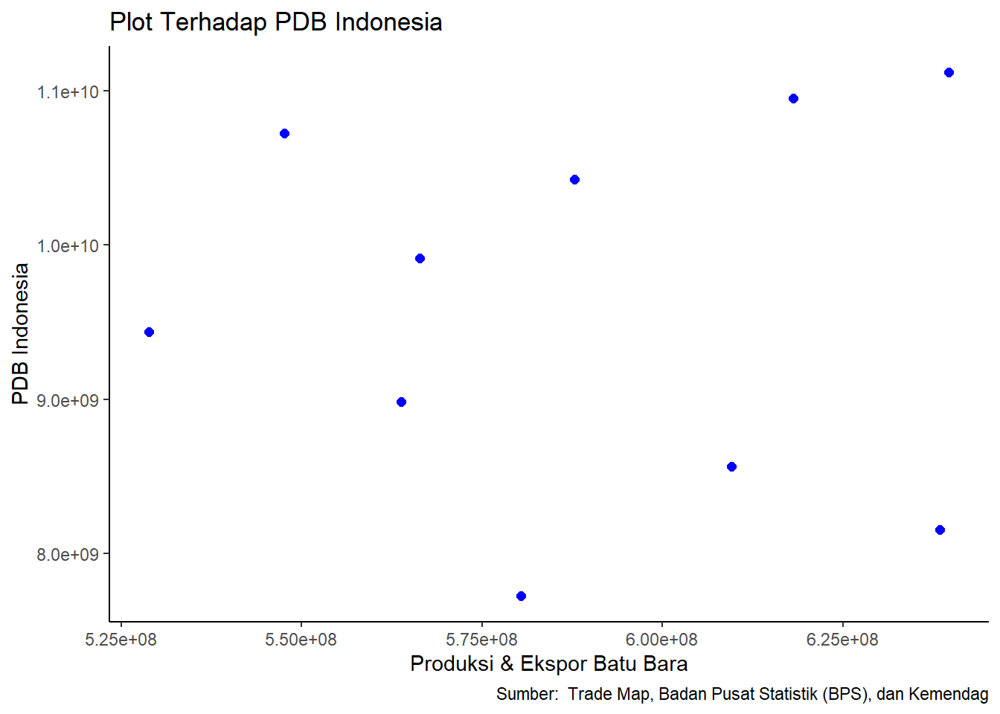

Analisis Pengaruh Produksi dan Ekspor Batubara Terhadap Pertumbuhan Ekonomi Indonesia dalam 10 tahun (2012-2021)
Metode Penelitian Politeknik APP Jakarta
Author
Muhammad Hanif Rivai (220204166)
Published
January 17, 2024
Politeknik APP Jakarta
1 Pendahuluan
1.1 Latar Belakang
Menurut ketentuan dalam Undang-Undang Nomor 4 Tahun 2009, Batubara merupakan endapan senyawa organik yang terbentuk secara alami dari sisa-sisa tumbuhan. Bahan bakar fosil ini memiliki berbagai aplikasi dalam industri seperti pembangkit tenaga listrik, sektor semen, kertas, baja, dan berbagai sektor lainnya. Sebagai sektor yang produktif, industri terus mendorong perkembangannya untuk memberikan kontribusi pada pertumbuhan ekonomi negara. Batubara Indonesia, secara mayoritas, dimanfaatkan untuk memenuhi kebutuhan energi Pembangkit Listrik Tenaga Uap (PLTU) dan sektor industri lainnya. Menurut Haryadi dan Suciyanti (2018), pada tahun 2016, sekitar 76% dari konsumsi batubara dalam negeri digunakan oleh PLTU, sedangkan sisanya, sebanyak 24%, digunakan oleh industri semen, metalurgi, pupuk, kertas, tekstil, dan briket.
Kehadiran batubara sangat penting dalam pemenuhan kebutuhan energi sebagai upaya untuk mengurangi ketergantungan pada minyak yang memiliki cadangan yang semakin berkurang. Menurut Yudiartono dkk. (2018), pada tahun 2016, cadangan batubara Indonesia mencapai 28.457,29 juta ton dan diperkirakan dapat bertahan selama kurang lebih 68 tahun ke depan. Meskipun terdapat sumber energi terbarukan dengan potensi besar, namun pemanfaatannya masih terhambat oleh berbagai kendala seperti tingginya investasi, efisiensi teknologi yang relatif rendah, serta tantangan geografis dan faktor sosial masyarakat pengguna energi. Sejauh ini, perkembangan sumber energi terbarukan belum menunjukkan indikasi bahwa ketergantungan pada bahan bakar fosil, termasuk batubara, akan menurun secara signifikan dalam waktu dekat. Oleh karena itu, batubara tetap dianggap sebagai salah satu sumber energi yang relevan di Indonesia.
Meskipun produksi batubara Indonesia mencapai jumlah yang signifikan, sebagian besar dari total produksinya saat ini diekspor ke berbagai negara yang masih mengandalkan batubara sebagai sumber energi listrik. Hal ini disebabkan oleh posisi geografis Indonesia yang strategis, terutama bagi negara-negara berkembang seperti Cina dan India. Kedua negara ini merupakan contoh dari beberapa negara yang mengimpor batubara Indonesia untuk memenuhi kebutuhan energi domestik mereka. Menurut data yang dikeluarkan oleh Badan Pusat Statistik (2015, 2020), nilai Produk Domestik Bruto (PDB) dari tahun 2000 hingga 2018 menunjukkan kecenderungan peningkatan. Selain itu, berdasarkan informasi yang disampaikan oleh Kementerian Energi dan Sumber Daya Mineral (2016, 2018), konsumsi batubara di dalam negeri dan ekspor batubara juga menunjukkan tren pertumbuhan yang signifikan. Adanya kecenderungan peningkatan pada ketiga variabel tersebut menunjukkan adanya indikasi hubungan searah. Hubungan ini akan diuji lebih lanjut menggunakan pendekatan regresi multivariat untuk memahami dampak yang ditimbulkan oleh ekspor batubara dan produksi batubara di dalam negeri terhadap pertumbuhan ekonomi.
1.2 Rumusan Masalah
Berdasarkan uraian latar belakang masalah diatas, maka terdapat beberapa indikator yang menjadi rumusan masalah dalam penelitian ini. Adapun rumusan masalah tersebut adalah sebagai berikut:
Apakah eskpor batubara berpengaruh terhadap pertumbuhan ekonomi di Indonesia?
Apakah produksi batubara berpengaruh terhadap pertumbuhan ekonomi di Indonesia?
1.3 Tujuan Penelitian
Berdasarkan latar belakang dan permasalahan yang ada maka tujuan dari penelitian ini adalah sebagai berikut :
Untuk Menganalisis apakah eskpor batubara berpengaruh terhadap pertumbuhan ekonomi di Indonesia
Untuk Menganalisis apakah produksi batubara berpengaruh terhadap pertumbuhan ekonomi di Indonesia
1.4 Manfaat Penelitian
Penelitian ini dapat menjadi panduan bagi mereka yang ingin mendalami topik tentang ekspor, produksi, dan pertumbuhan ekonomi batubara. Dengan adanya artikel lain yang mengembangkan konsep ini, penelitian ini secara tidak langsung dapat terus diperbaiki dan ditingkatkan. Selain itu, diharapkan bahwa hasil penelitian ini dapat memberikan referensi yang bermanfaat bagi penulis-penulis lain yang tertarik untuk memahami metode penelitian menggunakan sistem regresi melalui R Studio.
1.5 Package
Packages yang digunakan sebagai berikut:
library(tidyverse)
── Attaching core tidyverse packages ──────────────────────── tidyverse 2.0.0 ──
✔ dplyr 1.1.4 ✔ readr 2.1.4
✔ forcats 1.0.0 ✔ stringr 1.5.1
✔ ggplot2 3.4.4 ✔ tibble 3.2.1
✔ lubridate 1.9.3 ✔ tidyr 1.3.0
✔ purrr 1.0.2
── Conflicts ────────────────────────────────────────── tidyverse_conflicts() ──
✖ dplyr::filter() masks stats::filter()
✖ dplyr::lag() masks stats::lag()
ℹ Use the conflicted package (<http://conflicted.r-lib.org/>) to force all conflicts to become errors
library(readxl)library(WDI)
2 Studi Pustaka
2.1 Ekspor Batubara
Ekspor batubara merupakan kegiatan di mana suatu negara menjual produk batubara ke negara lain yang membutuhkannya. Hal ini disebabkan oleh perbedaan karakteristik sumber daya alam antar-negara atau karena negara pengimpor tidak dapat memenuhi kebutuhan akan produk tersebut secara domestik. Ekspor menjadi salah satu indikator yang dapat mendorong pertumbuhan ekonomi suatu negara. Menurut Arianti, Siahaan, dan Sihaloho (2017), pertumbuhan ekonomi dipengaruhi oleh berbagai faktor, termasuk ekspor. Salvator, seperti yang dikutip dalam Ginting (2017), mengemukakan bahwa ekspor berperan sebagai salah satu pendorong pertumbuhan ekonomi. Teori yang dijelaskan oleh Jung dan Marshall, sebagaimana disampaikan dalam Ginting (2017), mengemukakan empat hipotesis hubungan antara ekspor dan pertumbuhan ekonomi, yaitu:
ekspor sebagai penggerak pertumbuhan ekonomi suatu negara (export-led growth)
ekspor sebagai penyebab menurunnya pertumbuhan ekonomi suatu negara (export-reduced growth)
pertumbuhan ekonomi sebagai pendorong ekspor suatu negara (internally generated export)
pertumbuhan ekonomi yang menyebabkan penurunan ekspor dari negara tersebut.
Menurut Khusaini (2013:36), produksi dapat diartikan sebagai proses transformasi input atau bahan baku yang telah dibeli oleh perusahaan, kemudian diolah menjadi output atau produk yang siap dijual. Joesron dan Fathorrazi (2012:87) menggambarkan produksi sebagai hasil akhir dari suatu proses atau aktivitas ekonomi yang menggunakan beberapa masukan atau input untuk menghasilkan output. Sementara itu, Assauri (2008:14) menjelaskan bahwa produksi merupakan kegiatan yang bertujuan untuk mentransformasikan masukan atau input menjadi keluaran atau output, melibatkan semua aktivitas yang menghasilkan barang atau jasa, termasuk kegiatan-kegiatan pendukung yang mendukung produksi produk. Dari berbagai penjelasan di atas, dapat dipahami bahwa produksi adalah suatu proses atau kegiatan yang melibatkan input atau bahan baku yang diolah sehingga menghasilkan output atau produk yang dapat dipasarkan.
2.2 Produksi
Menurut Sofyan Assauri, produksi dapat didefinisikan sebagai serangkaian kegiatan yang bertujuan menciptakan dan menambah kegunaan (utility) dari suatu barang atau jasa. Dalam konteks ilmu ekonomi, kegiatan produksi ini memerlukan faktor-faktor produksi seperti tanah, tenaga kerja, dan keterampilan (organisasi, manajerial, dan keterampilan lainnya).
Murti Sumarti dan Jhon Soeprihanto juga memberikan pengertian produksi sebagai seluruh kegiatan yang terlibat dalam menciptakan atau meningkatkan kegunaan barang atau jasa. Dalam konteks ini, produksi melibatkan faktor-faktor produksi yang diperlukan untuk menjalankan kegiatan tersebut. Yusuf Qordhowi, seperti yang dikutip oleh Didin Hafidhuddin, menggambarkan produksi sebagai upaya manusia dalam menciptakan kekayaan dengan mengexploitasi sumber daya lingkungan. Dengan kata lain, produksi melibatkan eksploitasi sumber-sumber kekayaan untuk menciptakan nilai dan kegunaan yang lebih tinggi.
2.3 Pertumbuhan Ekonomi
Pertumbuhan ekonomi, menurut Kuznets (1971), merujuk pada peningkatan kemampuan jangka panjang suatu negara dalam menyediakan berbagai barang ekonomi untuk penduduknya. Peningkatan ini dapat dicapai melalui kemajuan teknologi, penyesuaian kelembagaan, dan ideologis sebagai tanggapan terhadap berbagai tuntutan kondisi yang ada. Pengukuran pertumbuhan ekonomi sering menggunakan Produk Domestik Bruto (PDB), yang mencerminkan total produksi barang dan jasa dalam suatu negara atau wilayah pada suatu waktu tertentu.
3 Metode Penelitian
3.1 Data
Tahun
Produksi (tons)
Total Ekspor (tons)
PDB (Juta Rupiah)
2013
232.857.917
347.575.752
7.727.083.400
2014
256.910.422
381.519.674
8.156.497.800
2015
253.227.753
356.302.906
8.564.866.600
2016
236.613.732
327.181.897
8.982.517.100
2017
218.196.785
310.662.259
9.434.613.400
2018
247.302.814
319.098.477
9.912.928.100
2019
244.718.586
343.124.011
10.425.851.900
2020
243.153.869
374.935.870
10.949.155.400
2021
206.030.323
341.547.629
10.722.999.300
2022
294.252.802
345.453.158
11.120.077.900
3.2 Metode analisis
Dengan merujuk pada penjelasan sebelumnya, tujuan dari penelitian ini adalah untuk menilai dampak ekspor batubara dan produksi batubara terhadap pertumbuhan ekonomi. Metode analisis yang digunakan dalam penelitian ini adalah metode kuantitatif dan penjabaran deskriptif. Teknik analisis kuantitatif merupakan analisis yang dilakukan dengan perhitungan angka-angka yang faktor yang mempengaruhi ekspor dan produksi tarhadap pertumbuhan ekonomi. Metode deskriptif digunakan untuk membuat gambaran secara sistematis dan faktual mengenai gambaran perkembangan dari setiap variabel dan pertumbuhan ekonomi selanjutnya pendekatan yang digunakan adalah kuantitatif dengan mengaplikasikan model regresi linier berganda.
4 Pembahasan
4.1 Pembahasan masalah
Pada bagian ini dapat ditampilkan data yang telah dikumpulkan :
library("readxl")dat<-read_excel("data.xlsx")library(ggplot2)ggplot(data=dat, aes(x=X+Y, y=S))+geom_point(color='blue', size=2)+labs(title="Plot Terhadap PDB Indonesia",x="Produksi & Ekspor Batu Bara",y="PDB Indonesia",caption ="Sumber: Trade Map, Badan Pusat Statistik (BPS), dan Kemendag") +theme_classic()

4.2 Analisis masalah
Hasil pengaruh nilai ekspor terhadap PDRB Kota Riau diestimasi menggunakan regresi univariat. Hasilnya ditunjukkan sebagai berikut:
Call:
lm(formula = S ~ X + Y, data = dat)
Residuals:
Min 1Q Median 3Q Max
-1.744e+09 -9.487e+08 -8.979e+07 9.667e+08 1.623e+09
Coefficients:
Estimate Std. Error t value Pr(>|t|)
(Intercept) 1.029e+10 7.309e+09 1.408 0.202
X 9.894e+00 2.004e+01 0.494 0.637
Y -8.993e+00 2.116e+01 -0.425 0.684
Residual standard error: 1.345e+09 on 7 degrees of freedom
Multiple R-squared: 0.04369, Adjusted R-squared: -0.2295
F-statistic: 0.1599 on 2 and 7 DF, p-value: 0.8553
Dari hasil analisis regresi, dapat disimpulkan bahwa peningkatan jumlah ekspor batubara memiliki dampak positif terhadap pertumbuhan ekonomi Indonesia. Secara kuantitatif, peningkatan ekspor batubara sebesar 1 persen dihubungkan dengan peningkatan pertumbuhan ekonomi sebesar 9.894e+00. Sebaliknya, penurunan jumlah ekspor batubara sebesar 1 persen akan menyebabkan penurunan pertumbuhan ekonomi sebesar 9.894e+00. Penelitian ini sesuai dengan prinsip-prinsip teori perdagangan internasional, di mana peningkatan ekspor mendorong peningkatan produksi dalam negeri.Namun, perlu diperhatikan bahwa hasil regresi menunjukkan bahwa jumlah produksi batubara memiliki pengaruh negatif terhadap pertumbuhan ekonomi. Koefisien produksi batubara sebesar -8.993e+00 menunjukkan bahwa peningkatan produksi sebesar 1 persen akan menyebabkan penurunan pertumbuhan ekonomi sebesar -8.993e+00, sementara penurunan produksi sebesar 1 persen akan berkontribusi pada peningkatan pertumbuhan ekonomi sebesar 8.993e+00.
5 Kesimpulan
Dari penelitian ini, dapat dinyatakan bahwa nilai ekspor dan produksi batubara memiliki pengaruh yang signifikan terhadap pertumbuhan ekonomi Indonesia. Hasil ini dapat diinterpretasikan melalui teori perdagangan internasional, di mana peningkatan jumlah ekspor dapat memperngaruhi peningkatan permintaan atas barang atau jasa dari negara lain. Sebagai respons terhadap permintaan yang meningkat ini, dalam negeri perlu meningkatkan produksi barang dan jasa agar dapat memenuhi kebutuhan pasar yang berkembang.Adapun hubungan ini mencerminkan prinsip-prinsip perdagangan internasional yang menggambarkan interaksi antara negara-negara dalam hal pertukaran barang dan jasa. Ketika ekspor suatu negara meningkat, hal itu menciptakan peluang bagi pertumbuhan ekonomi domestik karena memicu peningkatan produksi untuk memenuhi permintaan eksternal.
6 Referensi
Badan Pusat Statistik. (2022). Retrieved January 17, 2024, from https://kaltim.bps.go.id/indicator/10/361/1/produksi-batubara.html
ITC Trade Map. (2022). Retrieved January 17, 2024, from https://www.trademap.org/
Mughni, M. E. (2017). Pengaruh Variabel Makro Terhadap Produktivitas Jagung Di Indonesia.
Utomo, S. (2012). Dampak impor dan ekspor jagung terhadap produktivitas jagung di Indonesia. Etikonomi, 11(2).
Pertanian, K. (2021). Analisis Kinerja Perdagangan Jagung. Pusat Data Dan Sistem Informasi Pertanian Sekretariat Jenderal Kementerian Pertanian 2021, 5–24.